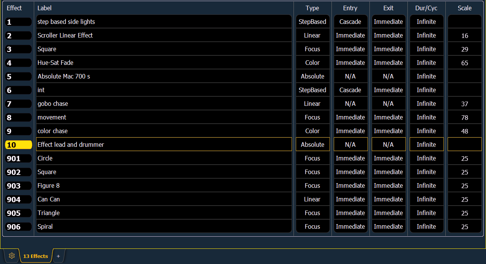

At any time you may press [Effect] [Effect] or [Tab] [1][3] to view the effect list. Any recorded effects will be displayed here. The effect list is a blind view and any changes made in this view are automatically stored; a record command is not required.
You can also use the command line search to see a list of effect names while in live or blind. See Command Line Search for more information.
Notice that there are effects existing in this list prior to any being recorded. Effects 901-918 are preprogrammed relative effects that are automatically available to you (see Relative Effects ).
To navigate this list use the navigation keys as described in Display Control and Navigation or select the effect number you wish to work with. Notice that when you select the effect list, the CIA changes to display the information for the currently selected effect.

Using the [Next]/ [Last] keys will only move between effects in the effect list display. To navigate the effect editor, you will need to use the page arrow keys.
You can use [Page t] or [Page u] when in the effect list display to begin navigating in the effect editor. This only works for step or absolute effects. You can press [Escape] to return focus to the effect list display.